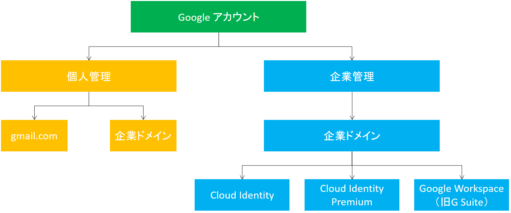

アクセス制御
- コンセプト
- リソース階層とアクセス制御
- リソースの管理
- コスト管理
- ユースケース
1. コンセプト
GCP のサービス（ プロダクトとサービスの一覧 ）は以下のカテゴリで構成される。（詳細）
- コンピューティングとホスティング
- ストレージ
- データベース
- ネットワーキング
- ビッグデータ
- 機械学習
基本的な概念は以下の通り。
- リージョンとゾーン ※地域とリージョン
- 一部の Compute Engine リソースは、リージョン内またはゾーン内にのみ存在する
- リージョン とはリソースを実行できる特定の地理的な場所で、各リージョンには、1 つまたは複数の ゾーンがある
- たとえば、リージョン
us-central1は米国中部を指し、ゾーンus-central1-a、us-central1-b、us-central1-c、us-central1-fが含まれる
- たとえば、リージョン
- ゾーンは、リージョン内の単一の障害ドメインとみなすことができる
- GCP のゾーンは、 AWS でいう AZ：アベイラビリティゾーン
- リソース
- リソースは大きく、 グローバルリソース （マルチリージョンリソース）、 リージョンリソース 、 ゾーンリソース の 3 つのスコープに分類され、アクセス可能なリソースが決まる（ 詳細 ）
- グローバルリソースには同じプロジェクトにある任意のリージョンまたはゾーンのリソースからアクセスできる
- リージョンリソースにアクセスできるのは、同じリージョン内のリソースだけ
- インスタンスに静的 IP アドレスを割り当てるには、インスタンスが静的 IP と同じリージョンに存在している必要がある
- ゾーンリソースにアクセスできるのは、同じゾーン内のリソースだけ
- 永続ディスクをインスタンスに接続するには、両リソースを同ゾーンに配置する必要がある
- プロジェクト
- リソースと課金を管理する単位
- 請求先アカウントをリンクすることで課金が有効
- Pricing Calculator（コスト見積のための Web UI）
- すべての GCP リソースは 1 つのプロジェクトに関連付けられる
- 各種設定と権限も含まれており、これを使用して、セキュリティルールとどのアカウントがどのリソースにアクセスできるかが指定される
- 共有 VPC または VPC ネットワークピアリングを使用しない限り、あるプロジェクトが別のプロジェクトのリソースにアクセスすることはできない
- 複数のプロジェクトを束ねて管理するには 組織 を使う
- プロジェクトは プロジェクト名 （任意のプロジェクト表示名）、 プロジェクトID （カスタマイズ可能な識別子）、 プロジェクト番号 （GCPから割り当てられる識別子）からなる
- リソースと課金を管理する単位
2. リソース階層とアクセス制御
- ToDo
- 「権限管理」くらいのタイトルで一つの記事に切り出して際整理が必要。
- ここが全て：https://cloud.google.com/iam/docs/overview?hl=ja
- 理解の補足
- 関係無いけど読むといいかも記事
2.1. Cloud Identity and Access Management（Cloud IAM）
Cloud Identity and Access Management（Cloud IAM） は、「誰が」「どういう操作を」「何に対して」行う権限を持つかを管理するサービス。
| 制御内容 | 具体例 |
|---|---|
| 誰が | メンバー |
| どういう操作を | ロール |
| 何に対して | リソース |
Cloud Console の 「サイドメニュー」->「 IAM と管理」->「 IAM 」から利用できる。
2.2. メンバー/「誰が」
リソースへのアクセスが許可される主体（「誰が」）には以下がある。
| 主体 | 内容 | 具体例 |
|---|---|---|
| Google アカウント | Gmail アカウントや Google アカウントに関連づけられているメールアドレス | @gmail.com やその他ドメインのメールアドレス |
| Google グループ | Google アカウントとサービスアカウントの名前付きコレクション | グループ固有メールアドレス |
| サービスアカウント | 個々のエンドユーザではなく、アプリケーションのアカウント | [サービスアカウント]@[プロジェクトID].iam.gserviceaccount.com |
| G Suite ドメイン | 組織のインターネットドメイン名 | example.com |
| Cloud Identity ドメイン | 組織のインターネットドメイン名（G Suite の機能にはアクセスできない） | example.com |
Google アカウント は 個人管理 と 企業管理 のものがある。
前者は個人の Gmail アカウントや（こんなことができると知らない人も多いが）任意のメールアドレスを個人利用の Google アカウントとして登録したもの。
後者は会社が Google Workspace （旧 G Suite）を導入している場合、そのユーザアカウントをそのまま利用できる。社外のユーザが GCP 環境にアクセスする場合は Cloud Identity を利用してユーザ管理することもできる。
Google グループ は単に Google アカウントをグループとしてまとめたもの（なので、説明は割愛する）。
ToDo：Resource Manager

- サービスアカウント
- アプリケーションやサーバのための ID
- サービスアカウント事態もリソースで、人が「サービスアカウントとして実行」もできる
- サービスアカウントによって使われるキーは自動的に管理される
- ユーザがキーを作成・ダウンロードすることも可能
gcloud iam service-accounts create SERVICE_ACCOUNT_IDでサービスアカウントを作成する- サービスアカウントには アクセススコープ を設定できる（以下、例）
https://www.googleapis.com/auth/cloud-platform：すべての Google Cloud リソースに対する完全アクセス権https://www.googleapis.com/auth/compute：Compute Engine メソッドに対するフル コントロール アクセス権https://www.googleapis.com/auth/compute.readonly：Compute Engine メソッドに対する読み取り専用アクセス権https://www.googleapis.com/auth/devstorage.read_only：Cloud Storage に対する読み取り専用アクセス権https://www.googleapis.com/auth/logging.write：Compute Engine ログに対する書き込みアクセス権
- アクセススコープでは完全な権限(/auth/cloud-platform)を付与し、IAMロールで権限を絞るのがおすすめ
2.3. 権限とロール/「どういう操作を」
リソースに対する操作の権限は以下の命名規則で表現される。
<サービス名>.<リソース>.<動詞>
ex)
compute.instance.delete
compute.instance.start
compute.instance.setMachineType
ロールには以下の種類がある。（ 詳細 ）
| ロール | 内容 |
|---|---|
| 基本ロール | プロジェクト単位 の権限セット。「オーナー」「編集者」「閲覧者」 |
| 事前定義ロール | 1 サービス単位 の権限セット。「<サービス名>オーナー」「<サービス名>編集者」「<サービス名>閲覧者」 |
| カスタムロール | カスタムな権限セット。バケット一覧は取得できないが、特定のバケットには書き込める、とか。 |
権限付与には 最小権限の原則 （より細かいロールで必要最低限の権限のみ付与する） を適用すること。
また、異なる権限を必要とする複数のサービスがある場合は、サービス毎に個別のサービスアカウントを作成し、各サービスアカウントに必要な権限のみ付与すること。
なお、基本ロールのそれぞれの権限は以下の通り。
| ロール名 | 権限 |
|---|---|
オーナー（ roles/owner ） |
全リソースへの完全なアクセス権。プロジェクトの課金情報を設定する。 |
編集者（ roles/editor ） |
全リソースへの編集アクセス権。閲覧者権限と既存のリソースに対する変更の権限。 |
閲覧者（ roles/viewer ） |
全リソースへの読み取りアクセス権。状態に影響しない読み取り専用アクションに必要な権限。 |
参照者（ roles/browser ） |
GCP リソースを参照するためのアクセス権。プロジェクトのリソースを表示する権限はない。 |
Identity and Access Management API または gcloud コマンドライン ツールを使用して、プロジェクトのメンバーにオーナーロールを付与することはできない。オーナーは、 Cloud Console を使用することによってのみ プロジェクトに追加できます。
事前定義ロールおよびカスタムロールのメタデータを確認する場合、 gcloud iam roles describe ROLE_ID コマンドで確認する。
事前定義ロールの一覧
2.4. リソース階層/「何に対して」
リソース は「 組織 > フォルダ > プロジェクト > リソース 」のような階層構造に まとめる ことができる。
- 組織
- Google Cloud リソース階層のルートノード
- 組織に適用されるポリシーは、組織のすべてのリソースの階層全体に適用される
- 組織管理者はすべてのリソースを集中てきに管理する
- フォルダ
- プロジェクトをグループ化し、まとめて管理
- フォルダ内にはプロジェクトや他のフォルダを作成できる
- 組織構造に合わせて使用できる
- プロジェクト
- ポリシーは基本的にプロジェクト以上の階層に割り当てる
- そして、上位に設定されたポリシーは下位に継承される
- リソース
- （省略）
例えば、「アカウント A に compute.instances.get 権限を 組織 X に対して付与」すると、「アカウント A は 組織 X に含まれる全てのフォルダの全てのプロジェクトの VM インスタンス情報を取得できる」ようになる。
2.5. アクセス制御のベストプラクティス
- 最小権限の原則 （より細かいロールで必要最低限の権限のみ付与する）に従って Cloud IAM のロールを付与する
- 事前定義ロール を使用する（適切な事前定義ロールがない場合のみ カスタムロール を使用する）
- リソースレベルではなく、 組織またはプロジェクト レベルでポリシーを設定する
- 個々のユーザではなく、 グループ にロールを付与する
gcloud iam roles copyコマンドを利用して既存プロジェクトのロールをグループにコピーして使ったりする
- ラベルを使って、リソースのアノテーションをつけ、グループ化・フィルタリングを行う
- 異なる権限を必要とする複数サービスがある場合は、サービス毎に個別のサービスアカウントを作成し、必要な権限のみ付与する
2.6. リソースへのアクセス権の付与、変更、取り消し
gcloud コマンドによるメンバのリソースに対するロールの付与について記載する。
以降のパラメータについては下記の通り。
- GROUP：
projectsまたはorganizations。 - RESOURCE：対象リソースの名前。
- MEMBER：ロールを付与する対象となるメンバの識別子。
member-type:idの形式。（例：user:my-user@example.com） - ROLE_ID：ロールの名前。（ 基本ロール 、 事前定義ロール ）
- FORMAT：json か yaml 。
- FILE_PATH：ファイルのパス。
- PROJECT_ID：プロジェクト ID 。
2.6.1. メンバにロールを付与する
$ gcloud GROUP add-iam-policy-binding RESOURCE --member=MEMBER --role=ROLE_ID
# 例：プロジェクト my-project のユーザー my-user@example.com に閲覧者の役割を付与する
$ gcloud projects add-iam-policy-binding my-project --member=user:my-user@example.com --role=roles/viewer
2.6.2. メンバからロールを削除する
$ gcloud GROUP remove-iam-policy-binding RESOURCE --member=MEMBER --role=ROLE_ID
# 例：プロジェクト my-project のユーザー my-user@example.com から閲覧者のロールを取り消す
$ gcloud projects remove-iam-policy-binding my-project --member=user:my-user@example.com --role=roles/viewer
2.6.3. ポリシーの取得
$ gcloud projects get-iam-policy PROJECT_ID --format=FORMAT > FILE_PATH
# 例
$ gcloud projects get-iam-policy my-project --format json > ~/policy.json
{
"bindings": [
{
"role": "roles/owner",
"members": [
"user:fatima@example.com"
]
},
{
"role": "roles/editor",
"members": [
"serviceAccount:service-account-13@appspot.gserviceaccount.com",
"user:wei@example.com"
]
}
],
"etag": "BwUjMhCsNvY=",
"version": 1
}
例の通り、ロールとそのロールが付与されたメンバの配列で表現される。
2.6.4. ポリシーの設定
gcloud projects get-iam-policy で取得したポリシーの JSON/YAML を編集するなどして、以下のコマンドでポリシーを更新することができる。
$ gcloud projects set-iam-policy PROJECT_ID FILE_PATH
# ファイル例
{
"bindings": [
{
"role": "roles/owner",
"members": [
"user:fatima@example.com"
]
},
{
"role": "roles/editor",
"members": [
"serviceAccount:service-account-13@appspot.gserviceaccount.com",
"user:wei@example.com"
]
}
]
}
3. リソースの管理
ここまでで出たリソースを管理してみる。
基本 gcloud コマンドでの管理とする。
3.1. プロジェクト
$ gcloud projects COMMAND [GCLOUD_WIDE_FLAG ...]
$ gcloud projects --help # コマンドの help
gcloud projects コマンドには「プロジェクトに対する CRUD」と「プロジェクトの IAMに関する操作」を実施できる。
Qwiklabs と Google Cloud の概要 のラボ環境 Cloud Shell などを利用して実際に実行してみる。
# プロジェクトの作成
$ gcloud projects create [PROJECT_ID]
# プロジェクトの一覧を取得 # プロジェクトが作成されていることを確認する
$ gcloud projects list
PROJECT_ID NAME PROJECT_NUMBER
qwiklabs-gcp-02-eac86d9938ef qwiklabs-gcp-02-eac86d9938ef 264608401336 # これが作成したプロジェクトとする
# プロジェクトの IAM ポリシーを取得 # 権限毎にユーザ・グループ・サービスアカウントが表示される
$ gcloud projects get-iam-policy qwiklabs-gcp-02-eac86d9938ef
bindings:
- members:
- serviceAccount:qwiklabs-gcp-02-eac86d9938ef@qwiklabs-gcp-02-eac86d9938ef.iam.gserviceaccount.com
- user:student-02-843d65d5d79e@qwiklabs.net # 現在のユーザ
role: roles/editor
- members:
- serviceAccount:qwiklabs-gcp-02-eac86d9938ef@qwiklabs-gcp-02-eac86d9938ef.iam.gserviceaccount.com
role: roles/owner
- members:
- serviceAccount:qwiklabs-gcp-02-eac86d9938ef@qwiklabs-gcp-02-eac86d9938ef.iam.gserviceaccount.com
- user:student-02-843d65d5d79e@qwiklabs.net # 現在のユーザ
role: roles/viewer
etag: BwW_ToiGehg=
version: 1
# メンバーにプロジェクトの権限を付与する # なお、リソースはプロジェクトなのでロールは基本ロールの「'roles/browser'」「'roles/editor'」「'roles/owner'」のみ
gcloud projects add-iam-policy-binding [PROJECT_ID] --member=MEMBER --role=ROLE
4. コスト管理
4.1. コスト算出
Google Cloud Pricing Calculator で各サービスに適した算出が可能。
ただし、 BigQuery など一部特殊なものもある。
請求データの分析は Cloud Billing データを BigQuery にエクスポートする を参照。
4.2. 請求
請求先アカウントのリンク（紐付け）を更新するためには、 請求先アカウント管理者 および プロジェクト支払い管理者 の権限が必要になる。
5. ユースケース
5.1. サービスアカウント
サービスアカウントを作成して、ネットワーク管理者とセキュリティ管理者のロールの権限を確認する。
以下の手順で確認する。
- ゾーン
us-central1-aの default ネットワーク環境を利用 - VM インスタンス blue を作成する
- nginx
- ネットワークタグ
web-serverを付与 /var/www/html/index.nginx-debian.htmlの<h1>Welcome to nginx!</h1>行を<h1>Welcome to the blue server!</h1>に編集
- VM インスタンス green を作成する
- nginx
/var/www/html/index.nginx-debian.htmlの<h1>Welcome to nginx!</h1>行を<h1>Welcome to the green server!</h1>に編集
- ファイアウォールルール
allow-http-web-serverを作成する- ターゲットタグ
web-serverに対してインターネットからの HTTP アクセスを許可
- ターゲットタグ
- VM インスタンス test-vm を作成する
- ここから blue と green を操作し、ネットワーク管理者とセキュリティ管理者のロールの権限を確認する
- 新規にサービスアカウント
Network-adminを作成して、 test-vm から権限を確認しつつ操作する
# 初期設定
$ gcloud config set compute/region us-central1
$ gcloud config set compute/zone us-central1-a
# VM インスタンス blue を作成
$ gcloud compute instances create blue \
--tags=web-server \
--metadata=startup-script='#! /bin/bash
apt-get update
sudo apt-get install nginx-light -y'
Created [https://www.googleapis.com/compute/v1/projects/qwiklabs-gcp-02-4e1179b11a90/zones/us-central1-a/instances/blue].
NAME ZONE MACHINE_TYPE PREEMPTIBLE INTERNAL_IP EXTERNAL_IP STATUS
blue us-central1-a n1-standard-1 10.128.0.2 104.198.156.96 RUNNING
# VM インスタンス green を作成
$ gcloud compute instances create green \
--metadata=startup-script='#! /bin/bash
apt-get update
sudo apt-get install nginx-light -y'
Created [https://www.googleapis.com/compute/v1/projects/qwiklabs-gcp-02-4e1179b11a90/zones/us-central1-a/instances/green].
NAME ZONE MACHINE_TYPE PREEMPTIBLE INTERNAL_IP EXTERNAL_IP STATUS
green us-central1-a n1-standard-1 10.128.0.3 34.123.63.156 RUNNING
# VM インスタンス test-vm を作成
$ gcloud compute instances create test-vm --machine-type=f1-micro
Created [https://www.googleapis.com/compute/v1/projects/qwiklabs-gcp-02-4e1179b11a90/zones/us-central1-a/instances/test-vm].
NAME ZONE MACHINE_TYPE PREEMPTIBLE INTERNAL_IP EXTERNAL_IP STATUS
test-vm us-central1-a f1-micro 10.128.0.4 35.232.124.24 RUNNING
# Cloud Console の Compute Engine ページから blue 、 green にログインして `/var/www/html/index.nginx-debian.html` を編集する。
$ gcloud compute ssh blue
$ sudo vi /var/www/html/index.nginx-debian.html
$ exit
$ gcloud compute ssh green
$ sudo vi /var/www/html/index.nginx-debian.html
$ exit
# ファイアウォールルール allow-http-web-server を作成
$ gcloud compute firewall-rules create allow-http-web-server \
--action=allow \
--direction=ingress \
--source-ranges=0.0.0.0/0 \
--target-tags=web-server \
--rules=tcp:80,icmp
ここまで作成したら、test-vm に SSH して、blue と green を疎通してみる。
$ gcloud compute ssh test-vm
$ curl http://10.128.0.2 # blue の内部 IP -> アクセス可能
$ curl http://10.128.0.3 # green の内部 IP -> アクセス可能
$ curl http://104.198.156.96 # blue の外部 IP -> アクセス可能
$ curl http://34.123.63.156 # green の外部 IP -> アクセス不可能！
$ exit
ネットワークタグ web-server を付与していない green は外部から HTTP アクセスできないことが確認できる。
ここからはサービスアカウントを作成して、そのサービスアカウントにネットワーク管理者とセキュリティ管理者のロールを付与することによってどのようにアクセス制御されるのかをみてみる。
- ネットワーク管理者: ネットワーキング リソース（ファイアウォール ルールと SSL 証明書を除く）を作成、変更、削除するための権限。
- セキュリティ管理者: ファイアウォール ルールと SSL 証明書を作成、変更、削除するための権限。
デフォルトのサービスアカウントが付与されている test-vm に SSH して上記の権限を確認してみる。
$ gcloud compute ssh test-vm
$ gcloud compute firewall-rules list
ERROR: (gcloud.compute.firewall-rules.list) Some requests did not succeed:
- Request had insufficient authentication scopes.
$ gcloud compute firewall-rules delete allow-http-web-server
ERROR: (gcloud.compute.firewall-rules.delete) Could not fetch resource:
- Request had insufficient authentication scopes.
$ exit
デフォルトのサービスアカウントでは権限が不足しているため、エラーが発生する。
新規でサービスアカウントを作成して、権限を付与してみる。
- Cloud Platform Console で、ナビゲーション メニュー（mainmenu.png）> [IAM と管理者] > [サービス アカウント] に移動します。
- [サービス アカウントを作成] をクリックします。
- [サービス アカウント名] に「Network-admin」と入力し、[作成] をクリックします。
- [ロールを選択] で、[Compute Engine] > [Compute ネットワーク管理者] を選択し、[完了] をクリックします。
- 一覧から 「Network-admin」 を選択して、 [鍵の管理] をクリック
- [鍵の追加] -> [新しい鍵] -> [JSON] を選択し、 [作成]
- JSON ファイルがローカルにダウンロードされるので
credentials.jsonにリネーム
test-vm に SSH して、作成したサービスアカウント権限で操作してみる。
- Cloud Console から test-vm インスタンスに SSH してターミナルを開く
- SSH VM ターミナル右上の隅にある歯車アイコンをクリックして、[ファイルをアップロード] をクリックして
credentials.jsonをアップロード - アップロードした認証情報を使用して VM に許可を与える
gcloud auth activate-service-account --key-file credentials.json
以上で、サービスアカウント Network-admin の権限が付与された。
この状態で操作してみる。
$ gcloud compute firewall-rules list
NAME NETWORK DIRECTION PRIORITY ALLOW DENY DISABLED
allow-http-web-server default INGRESS 1000 tcp:80,icmp False
default-allow-icmp default INGRESS 65534 icmp False
default-allow-internal default INGRESS 65534 tcp:0-65535,udp:0-65535,icmp False
default-allow-rdp default INGRESS 65534 tcp:3389 False
default-allow-ssh default INGRESS 65534 tcp:22 False
$ gcloud compute firewall-rules delete allow-http-web-server
ERROR: (gcloud.compute.firewall-rules.delete) Could not fetch resource:
- Required 'compute.firewalls.delete' permission for 'projects/qwiklabs-gcp-02-4e1179b11a90/global/firewalls/allow
-http-web-server'
ネットワーク管理者 の権限があるためファイアウォールルールの一覧を確認できたが、 セキュリティ管理者 の権限が無いためファイアウォールルールの削除はできなかった。
なので、サービスアカウント Network-admin に セキュリティ管理者 の権限を付与してみる。
- Cloud Platform Console で、ナビゲーション メニュー > [IAM と管理] > [IAM] に移動
- Network-admin アカウントを見つけます。このアカウントは [名前] 列で特定
- Network-admin アカウントの鉛筆アイコンをクリック
- [ロール] を [Compute Engine] > [Compute セキュリティ管理者] に変更して [保存]
セキュリティ管理者 の権限に変更できたので、もう一度 gcloud compute firewall-rules delete allow-http-web-server を実行してみると今度はエラーなく実行できることを確認できる。